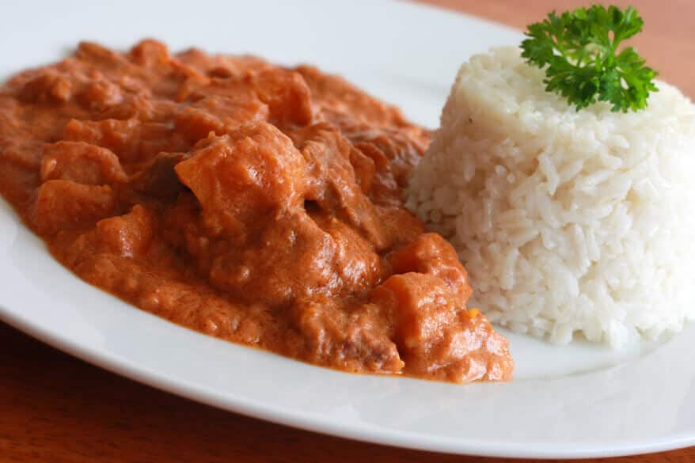

Domoda

Peanut soup locally known as Domoda. Predominantly cooked in The Gambia
Ingredients
- Rice - broken grains
- Fish, meat or chicken
- Peanut paste and Tomatoes
- Spices and Vegetable oil
Steps
-
Heat olive oil in a large stock pot over medium-high heat. Cook onion,
bell pepper, and garlic until lightly browned, about 5 minutes. Stir in
tomatoes with their juice, vegetable broth, pepper, and red pepper
flakes. Simmer, uncovered, for 15 minutes.
-
Add rice to soup and stir. Reduce heat, cover, and simmer 25 minutes, or
until rice is tender.
-
When rice is cooked, whisk in peanut butter and return to a simmer, and
serve. Garnish with chopped roasted peanuts, if desired.
Home